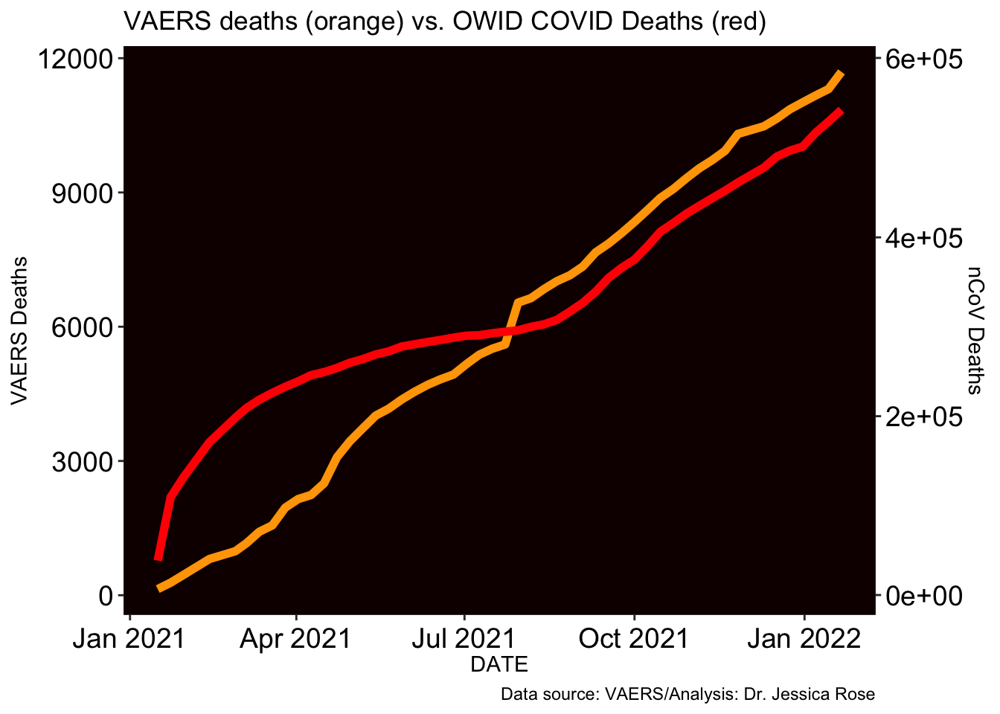

This is an R Markdown sheet generated from the VAERS data. I included some code but for the most part, only figures are shown. I decided to show figures pertaining to Death, Spontaneous abortions, Breakthrough COVID-19 infections and Cardiovascular, Neurological and Immunological adverse events.
I start by coalescing the .csv files downloaded from the VAERS website: https://vaers.hhs.gov/data/datasets.html
BAR PLOT FOR SAE COMPARISON TO STANDARD (15%)
DISTRIBUTION OF ALL DATA BY AGE GROUP  NUMBER OF SPONTANEOUS ABORTIONS
## [1] 241DISTRIBUTION OF SPONTANEOUS ABORTIONS BY AGE

Plot showing OBSERVED (orange) vs. EXPECTED (yellow) percentages of specific time-frames between Vaccination Date and Miscarriage Date
 HEATMAP showing correlation between Vaccine Date and Onset Date for Spontaneous Abortions
HEATMAP showing correlation between Vaccine Date and Onset Date for Spontaneous Abortions
 Distribution of all Breakthrough COVID-19 cases by age group
Distribution of all Breakthrough COVID-19 cases by age group
 Breakthrough COVID-19 Cases by update date
Breakthrough COVID-19 Cases by update date
 SOME CHARTS FOR BREAKTHROUGH COVID CASES (BCC)
SOME CHARTS FOR BREAKTHROUGH COVID CASES (BCC)
BREAKTHROUGH COVID CASES by manufacturer.
This is the pie chart for the dead of the breakthrough cases.
Pie chart for distribution of vax manu data in US population (U.S. COVID-19 Vaccine Delivered by Vaccine Type
Date generated: CDC | Data as of: May 4, 2021 6:00am ET. Posted: Tuesday, May 25, 2021 6:00 PM ET https://covid.cdc.gov/covid-data-tracker/#vaccinations
Pie chart for Breakthrough COVID-19 cases by age group WHO DIED
Plot showing OBSERVED (orange) vs. EXPECTED (yellow) percentages of specific time-frames between Vaccination Date and Death Date
 HEATMAP showing correlation between Vaccine Date and Onset Date for Deaths
HEATMAP showing correlation between Vaccine Date and Onset Date for Deaths
 Plot showing OBSERVED (orange) vs. EXPECTED (yellow) percentages of specific time-frames between Vaccination Date and Onset Date of Cardiovascular Adverse Event
Plot showing OBSERVED (orange) vs. EXPECTED (yellow) percentages of specific time-frames between Vaccination Date and Onset Date of Cardiovascular Adverse Event
 HEATMAP showing correlation between Vaccine Date and Onset Date for Cardiovascular Adverse Events
HEATMAP showing correlation between Vaccine Date and Onset Date for Cardiovascular Adverse Events
 Plot showing OBSERVED (orange) vs. EXPECTED (yellow) percentages of specific time-frames between Vaccination Date and Onset Date of Neurological Adverse Event
Plot showing OBSERVED (orange) vs. EXPECTED (yellow) percentages of specific time-frames between Vaccination Date and Onset Date of Neurological Adverse Event
 HEATMAP showing correlation between Vaccine Date and Onset Date for Neurological Adverse Events
HEATMAP showing correlation between Vaccine Date and Onset Date for Neurological Adverse Events
 Plot showing OBSERVED (orange) vs. EXPECTED (yellow) percentages of specific time-frames between Vaccination Date and Onset Date of Immunological Adverse Event
Plot showing OBSERVED (orange) vs. EXPECTED (yellow) percentages of specific time-frames between Vaccination Date and Onset Date of Immunological Adverse Event
 HEATMAP showing correlation between Vaccine Date and Onset Date for Immunological Adverse Events
HEATMAP showing correlation between Vaccine Date and Onset Date for Immunological Adverse Events

Histograms to show distributions by age group in Death, Hospital, ER, CV, Neuro and Immuno AE groups


 ABSOLUTE NUMBERS OF AEs
IDS NORMALIZED TO FV PER MILLION
ABSOLUTE NUMBERS OF AEs
IDS NORMALIZED TO FV PER MILLION

## [1] 774
## AGE_GROUP n skew
## 1 B. 10-20 4 1.780633
## 2 C. 20-30 137 1.780633
## 3 D. 30-40 351 1.780633
## 4 E. 40-50 171 1.780633
## 5 F. 50-60 52 1.780633
## 6 G. 60-70 10 1.780633
## 7 H. 70-80 1 1.780633
## 8 I. 80-90 3 1.780633
## 9 J. 90-100 1 1.780633## # A tibble: 51 x 3
## # Rowwise:
## SYMPTOM n PERC
## <chr> <int> <dbl>
## 1 Abortion spontaneous 241 0.152
## 2 Heavy menstrual bleeding 101 0.0639
## 3 Menstruation irregular 80 0.0506
## 4 Menstrual disorder 74 0.0468
## 5 Dysmenorrhoea 65 0.0411
## 6 Intermenstrual bleeding 45 0.0285
## 7 Menstruation delayed 32 0.0202
## 8 Vaginal haemorrhage 23 0.0145
## 9 Amenorrhoea 20 0.0126
## 10 Postmenopausal haemorrhage 17 0.0108
## # … with 41 more rows